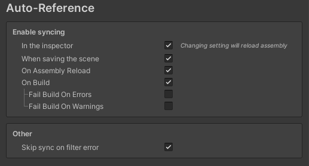
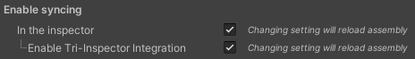
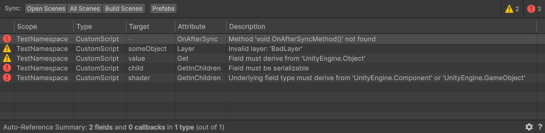
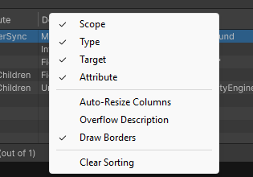
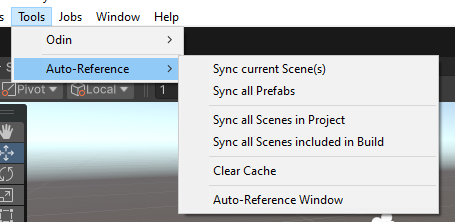
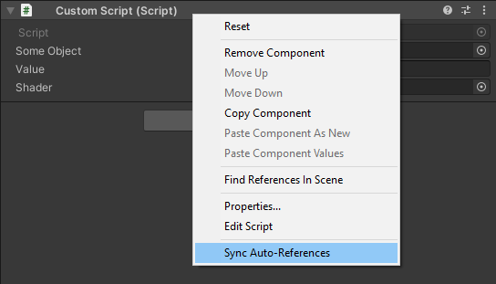
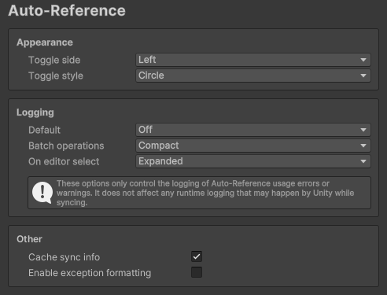
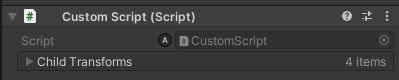

Auto-Reference Toolkit
The Auto-Reference Toolkit is a Unity editor extension designed to simplify the process of retrieving, validating, and assigning references to assets or components during edit time.
Installation Process
Install this package through the Unity Package Manager:
- Open the Package Manager window by going through Window ▸ Package Manager
- Click the + sign in the top-left corner and select Add package from git URL...
-
Enter the repository URL:
https://gitlab.com/zoodinger/autoreference.git
To install and stay on a specific version, append the version tag:https://gitlab.com/zoodinger/autoreference.git#v2.3.1 -
Click Add to complete the installation.
Quick Links
For a quick list of the most important features, refer to the Cheat Sheet.
If you're just getting started and want to avoid reading the entire documentation, these two sections will be the most useful:
For some more advanced usage and configuration, these two sections will also be beneficial:
Overview
Game development in Unity often requires using references to components or assets. The components may be placed on the
same GameObject as your script or relative to its hierarchy (e.g., a parent Canvas). Or sometimes they can exist
anywhere in the scene (e.g., a Camera). And sometimes you need references to specific assets, such as a Material or
Shader.
Typically, developers have two ways to achieve this:
- By using the equivalent
Get*orFind*methods such asGetComponent,GetComponentInParent, etc. This only includes components in the scene. - By dragging the appropriate references to the inspector. When the relevant built-in Unity functions are not enough, this might be the only approach.
Both these methods have their drawbacks — they either incur a runtime overhead and require verbose code, or are time-consuming to set up.
Key Features
- Zero runtime overhead: Everything is performed in the editor.
- Precise referencing: An assortment of filters allows you to get the specific objects you need.
- Extensibilty: You can write your own attributes and filters.
- Versatility: The toolkit provides various ways to get sync references automatically that can be optionally disabled via the Project Settings.
- Built-in Integrations: The toolkit works with all inspectors but supports additional out-of-the-box integration with the Odin Inspector, Tri Inspector, and Unity Editor Toolbox. Manual integration with other inspectors can also be done, but the user will have to implement them.
- Usage validation: The toolkit will provide errors or warnings for invalid usage of getter or filter attributes.
- Works with Arrays and generic Lists just as easily as plain fields.
First look
Auto-Reference is a toolkit that instructs the Unity editor to quickly get these references by using a range of attributes.
Here are some examples:
using Teo.AutoReference;
// ...
public class MyBehaviour : MonoBehaviour {
[Get] public Image image; // Get a reference to an Image component on the same game object.
[GetInParent] public Canvas canvas; // Get a reference to a Canvas component in a parent.
[GetInChildren, FilterBy(nameof(FilterMethod))] MyScript script; // Get a MyScript through a custom filter method.
[GetInParent, IgnoreSelf] public RectTransform rectTransform; // Get a reference to the parent's rect transform.
[GetInChildren, Layer("Walls")] public Collider[] walls; // Get colliders with Walls layer.
[FindInScene, Tag("MainCamera")] Camera mainCamera; // Get the camera tagged as MainCamera
[FindInScene, Tag("MainCamera", Exclude = true)] public Camera[] others; // Get cameras that aren't the main camera.
[FindInAssets, Name("Custom/Test")] public Shader shader; // Get the shader with this name.
[GetInChildren, SortByDistance] public AScript closest; // Get the AScript placed on the closest GameObject.
[Get, SyncOptions(SyncMode.IfEmptyPermissive)] public Transform target; // Get the transform if unset but allow other values too.
// Filter method used in FilterBy
private bool FilterMethod(MyScript script) {
// ...
}
// ...
}
The references will be set in the editor before you use them in the rest of the script. Getting them in the Awake()
or Start() methods is not required, and you don't need to drag them yourself!
How it works
The Auto-Reference toolkit is designed to be straightforward in its use. Depending on the attributes you've provided, the toolkit performs an operation for each field:
- Identifies serializable fields of type
T,T[],List<T>, whereTis of typeUnityEngine.Object. - Retrieves references that satisfy the main attribute requirements.
- Validates all references with the filter attributes provided.
- Assign the field's value from the filtered references.
- Perform additional user-defined validations whenever applicable.
Note that UnityEngine.Object is the base class for all objects Unity can reference, which includes components and
assets.
This process is called syncing auto-references.
Usage
Built-in Main Getter Attributes
This toolkit offers these built-in getter attributes for reference retrieval and validation:
| Name | Used To Get | Description |
|---|---|---|
Get |
Components | Similar to GetComponent[s]. |
GetInChildren |
Components | Similar to GetComponent[s]InChildren but also allows for max depth. See: GetInChildren |
GetInParent |
Components | Similar to GetComponent[s]InParent but also allows for max depth. See: GetInParent |
GetInSiblings |
Components | Gets a reference attached to a sibling GameObject. See: GetInSiblings |
FindInScene |
Components | Similar to FindObject* methods but only includes objects in the current scene. |
FindInAssets |
Objects | Similar to AssetDatabase.FindAssets. See: FindInAssets |
FindInParent |
Components | Find components that exist under a parent of a specific type (e.g. a Canvas). See: FindInParent |
Note: All Component-based attributes may be used on
GameObjectfields as well. The values will be retrieved asTransformreferences and then converted toGameObjectand vice versa whenever required. This process happens automatically without user intervention.
Built-in Filters
To correctly target and narrow down to the intended reference(s), the user can use several filters:
| Filter | Used On | Description |
|---|---|---|
TypeConstraint |
Objects | Requires objects to have a specific subtype, such as scripts that implement an interface. |
ExactType |
Objects | Requires objects to have the exact type as the field, i.e. rejects derived types. |
Contains |
Components | Requires game objects to contain a component of a specific type. |
ContainsInChildren |
Components | Requires game objects to contain a component of a specific type in a child. See: ContainsInChildren |
ContainsInParent |
Components | Requires game objects to contain a component of a specific type in a parent. See: ContainsInParent |
IgnoreSelf |
Components | Ignore components placed on the same GameObject or optionally the component itself. See: IgnoreSelf |
IgnoreInactive |
Components | Ignore components placed in inactive objects. |
IgnoreDisabled |
Components | Ignore disabled components (i.e., those unchecked in the inspector). |
Layer |
Components | Targets objects that match any of the provided layers. See: Layer and Tag |
Tag |
Components | Targets objects that match any of the provided tags. See: Layer and Tag |
Name |
Objects | Targets objects that match any of the provided names. See: Name |
FilterBy |
Objects | Filter references according to a callback method. See: FilterBy |
IgnoreNested |
Components | Discard components whose transform is a child of the transform of any other component in the input. See: IgnoreNested |
Unique |
Objects | Remove duplicate values. |
SortByID |
Objects | Order references by instance ID. |
SortByDistance |
Components | Order references by their relative distance to the script that contains the field. |
SortByName |
Objects | Order references by their name. |
Sort |
Objects | Order IComparable or IComparable<Type> refernces. See: Sort |
SortBy |
Objects | Sort by a method that either belongs to the script or another type. See: SortBy for more information. |
Reverse |
Objects | Reverse the order - useful when combined with sorting. |
Take |
Objects | Take the first X elements based on a value or a callback method. See: Take |
TakeLast |
Objects | Take the last X elements based on a value or a callback method. See: TakeLast |
TakeWhile |
Objects | Take elements until a condition returns false. See: TakeWhile |
Like the main getter attributes, component-based filters may be used with GameObject fields as well. The toolkit will
automatically convert references from Transform to GameObject and vice versa whenever required by the filter.
Filters can be provided without a getter main attribute if the user wants to simply validate existing fields.
Note: The C# Language specification does not guarantee that the order attributes are placed in is respected. Filters are instead sorted based on a default priority, which can be overriden by the user. See this section for more information.
Additional Control via SyncOptions
The user can provide an optional SyncOptions attribute to further control when the editor should attempt to sync
references. The options the user can provide:
Sync Mode
ValidateOnly: Validates the reference(s) without automatic retrieval. This is useful for ensuring field constraints without retrieving a reference, for example, ensuring that the set value is always a child of the script.IfEmpty: Only retrieve and validate references if there is no existing value. All values are validated.IfEmptyPermissive: Only retrieve and validate references if there is no existing value, but skip validation if the value is not empty. Useful for getting a "default" value while still allowing others.Always: Always retrieve and validate the reference(s). Any modification the user makes in the inspector will be overwritten when syncing occurs.Expanded: Always retrieve nad validate references but allow additional values that pass validation.ExpandedPermissive: Always retrieve and validate references but allow any additional values without validation.Default: This mode behaves differently based on whether the field is non-array/list or an array/list:- For single fields, it behaves like
IfEmpty - For arrays/lists it behaves like
Always.
- For single fields, it behaves like
Example:
// Does not automatically set the value of image but only allows Images placed in child components
[GetInChildren, SyncOptions(SyncMode.ValidateOnly)] public Image image;
Context Mode
The user can also provide a ContextMode if they want scripts to only synchronize for scene objects, prefabs, or both:
Scene: Only synchronize the field when editing its game object directly in the scene. Note that this includes scripts on prefabs that are placed in the scene but not while editing the prefabs.Prefab: Only synchronize the field when it's part of a prefab that the user opened to edit directly. This can be useful when a prefab depends on a very specific component already in the prefab, and the user doesn't want any other components placed in the scene to interfere with the syncing process.Default: Always synchronize (equal toScene | Prefab)
Example:
// Only get references while editing the prefab.
[GetInChildren, SyncOptions(ContextMode.Prefab)] public Image[] images1;
// Only get references if the object is in the scene - do not get references while in prefab editing mode.
[GetInChildren, SyncOptions(ContextMode.Scene)] public Image[] images2;
After-sync callbacks
There are times when the user would need to do additional filtering, validation, or any other operations after the references sync, particularly when the logic depends on multiple references or deals with non-Unity objects.
After-sync callbacks run automatically after all references are synced in the current script. Note that in the case
of using the On-Inspect integration, this happens after OnValidate.
OnAfterSync Attribute
This attribute can be applied to a method to make it run automatically after syncing.
Example:
using Teo.AutoReference;
public class ReferenceScript : MonoBehaviour {
public int value;
}
public class ReferenceScriptManager: MonoBehaviour {
public int minimumValue;
}
public class Example : MonoBehaviour {
[SerializeField, FindInScene] private ReferenceScriptManager manager;
[SerializeField, GetInChildren] private ReferenceScript[] references;
// This will be called after all references have synced
[OnAfterSync]
public void Callback() {
// Further filter references based on some custom code.
references = references.Where(r => r.value >= manager.minimumValue).ToArray();
}
}
This attribute can also be applied on the class-level, but in this case a name must be provided. Example:
[OnAfterSync(nameof(SyncCallback))]
public class Example2 : MonoBehaviour {
private void SyncCallback() {
// ...
}
}
When the attribute is placed on a method, the provided method name (if any) is ignored.
Note: Like other attributes C# does not guarantee the execution order of methods marked with the
OnAfterSyncattribute, so keep this under consideration. However, all base-type callbacks are guaranteed to run before any derived-type callbacks.
Sync observer objects
As of version 2.1.0, support for sync callbacks for non-Unity objects is added.
ISyncObserver
A custom type can implement the ISyncObserver interface to receive callbacks when references are synced.
using Teo.AutoReference;
using Teo.AutoReference.System;
public struct SyncableData : ISyncObserver {
public int value;
void ISyncObserver.OnSync(MonoBehaviour target) {
value = target.name.Length;
}
}
public class SampleScript : MonoBehaviour {
public SyncableData data; // data.value will get the value 12
}
Notes and limitations
The toolkit will scan a script for all serializable types that implement the ISyncObserver interface and register
their callbacks to run when that script is synced. However, please note that:
- This is not recursive. If a type implements
ISyncObserverand has its own fields of types that implementISyncObserver, the callbacks will not be registered for those fields. - On a similar note, lists or arrays of types implementing
ISyncObserverwill not have any of their elements synced. - Unity objects do not support the
ISyncObserverinterface. If a type implementsISyncObserverand is a Unity object, the toolkit will log a warning and simply ignore it.
The suggested solution is to call the syncing explicitly for those fields.
Manually triggering syncing on ISyncObserver objects
The toolkit provides the following methods, where T is ISyncObserver:
AutoReference.SyncData<T>(MonoBehaviour target, T observer): Used only on class objectsAutoReference.SyncData<T>(MonoBehaviour target, ref T observer): Used only on struct objectsAutoReference.SyncData<T>(MonoBehaviour target, IList<T> list): Used on arrays and lists to sync all their elements.AutoReference.SyncData<T>(MonoBehaviour target, IList<T> list, Predicate<T> predicate): Used on arrays and lists to sync only the elements that match the predicate.
Note: these methods are preferred over manually calling the
OnSyncmethod on the object because they will invoke all appropriate callbacks in the inheritence hierarchy. See here for more information.
Example usage:
using Teo.AutoReference;
using Teo.AutoReference.System;
public struct InnerData : ISyncObserver {
public int value;
void ISyncObserver.OnSync(MonoBehaviour target) {
value = target.name.Length * 2;
}
}
public struct SyncableData : ISyncObserver {
public int value;
public InnerData innerData; // This field will not be synced automatically.
void ISyncObserver.OnSync(MonoBehaviour target) {
value = target.name.Length;
AutoReference.SyncData(target, ref innerData); // This is required to sync the innerData field.
}
}
public class SampleScript : MonoBehaviour {
public SyncableData[] dataArray; // This will NOT be synced automatically.
public SyncableData data; // This WILL be synced automatically
[OnAfterSync] // Refer to the After-sync callbacks section for more information.
public void Callback() {
AutoReference.SyncData(this, dataArray); // This will sync every element in the data array.
}
}
Set-Up and Configuration
ProjectSettings
By default, the toolkit syncs references:
- In active scene(s) when the assembly is reloaded (e.g., when the code recompiles)
- Any active scene before it is saved
- When the inspector is enabled/disabled or a change is made on the inspector.
- In build scenes when the project is built
This behavior can be fine-tuned in Project Settings ▸ Auto-Reference:

The inspector support only works for the default inspector. For custom inspectors you can refer to this section for more information.
When a supported third party inspector is detected, it shows up as an option:

Note: If a third party inspector is removed for whatever reason, the user will have to manually disable integration for the code to re-compile. Otherwise, the custom integration will throw syntax errors due to now missing references.
Auto-Reference Window
This window shows all usage issues (errors and warnings) that are supported by getter and filter attributes.

Usage issues happen when the user uses any of the getter or filter attributes inappropriately, such as applying them on invalid fields or passing invalid parameters to them. They don't include any errors that may happen during syncing, such as exceptions thrown from callback methods that are otherwise correctly defined.
It scans all MonoBehaviour-derived scripts under the Assets folder for any issues. Double-clicking on an issue will open the file that contains it in the custom editor defined in your Unity preferences.
The toolbar at the top allows the user to sync entire scenes or prefabs:
- Open Scenes: Sync all scenes that are currently open, even if they're unloaded.
- All Scenes: Sync all scenes (*.unity extension) placed under the Asset folders, including open scenes.
- Build Scenes: Sync all scenes that are included and enabled in the build settings.
- Prefabs: Sync all prefabs placed in Assets.
Note that you can change some display settings for the window by right-clicking the header area:

Menus
The following operations are also available to the user:
- Auto-Reference menu: Accessible via Tools ▸ AutoReference:

The sync options here are identical to the ones given through the window. - MonoBehaviour context menu: Accessible by right-clicking the script in the inspector and selecting Sync Auto-References:

This will apply syncing on the current script.
Preferences
Additional configuration can be found in Preferences ▸ Auto-Reference

The available logging levels:
- Off: Never log any issues
- Compact: Log only a summary
- Expanded: Log every usage warning / error
Integrated Inspector
The Auto-Reference toolkit provides a modified version of the default inspector, which syncs references on the current
game object. For classes with custom editors the user is required to inherit their editor from AutoReferenceEditor or
add support via other means. See Sync References On Demand for more information.
When the current inspector supports syncing and the script it targets has auto-reference information, the Sync Toggle Button is displayed:

Unchecking this button temporarily disables syncing on the inspector. This is useful when the user wants to manually
make changes without triggering any possibly disruptive validation. E.g., using Unique on an array or list will
prevent the user from adding new items with the + button, because by default Unity duplicates the last item.
Adding this button is possible in custom editors as well.
Third-party Integrations
The toolkit also adds automatic integration with Odin, Tri Inspector, and Unity Editor Toolbox which enables this
feature for all MonoBehaviour inspectors.
For custom Odin and Tri Inspector editors this feature will be inherited and no additional effort is required.
However, for custom Unity Editor Toolbox editors, the user will have to inherit from the AutoToolboxEditor class if
they wish to keep this feature enabled:
using Teo.AutoReference.Editor;
[CustomEditor(typeof(MyScript))]
public class MyScriptEditor : AutoToolboxEditor {
protected override void DrawCustomAutoInspector() {
// ...
}
}
This class is only available if Unity Editor Toolbox is installed in the project.
Sync References On Demand
If you find the above solutions not enough, you can always sync auto-references on demand. Use this method contained
in the AutoReference class:
using Teo.AutoReference;
//..
AutoReference.Sync(behaviour);
A good place to do this is in the OnValidate method, which gets called if anything changes in the inspector:
using Teo.AutoReference;
// ...
public class CustomScript : MonoBehaviour {
// NOTE: This is not required if CustomScript uses the integrated inspector or another editor that adds support for
// syncing, otherwise syncing will be called multiple times.
// Unity calls this when the script is being created, its code changes, or its values change in the inspector.
private void OnValidate() {
AutoReference.Sync(this);
}
// Not required but nice to have.
private void Reset() {
AutoReference.Sync(this);
}
// ... Rest of your code
}
In some Unity editor contexts, changing a component’s values doesn’t automatically mark it as modified. To ensure the
changes are recorded, use EditorGUIUtility.SetDirty(target). Alternatively, call AutoReference.SetDirty(target), a
safe wrapper that includes editor-only preprocessor directives. It can be used in final code and will be silently
ignored in builds.
Also, please remember that by design, syncing references only works in the Editor and only when the game is not running.
See additional notes.
Custom Editors
If your script requires a custom editor, and you want to sync auto-references, you can modify it like this:
using Teo.AutoReference;
using Teo.AutoReference.Configuration;
using Teo.AutoReference.System;
using Teo.AutoReference.Editor;
[CustomEditor(typeof(CustomScript))]
public class CustomScriptEditor: Editor {
// Enable button by default
private bool _isSyncingEnabled = true;
public override void OnInspectorGUI() {
serializedObject.Update();
EditorGUI.BeginChangeCheck();
// Optional: Draw the script header with the Sync Toggle Button to allow the user to temporarily turn syncing off
_isSyncingEnabled = AutoReferenceEditor.DrawSyncHeader(target as MonoBehaviour, _isSyncingEnabled);
// Rest of the editor goes here
// NOTE: We use the single | instead of the double || here. This is because we want to check BOTH
// the left and right operands and avoid short-circuiting. E.g. If EndChangeCheck() returns true,
// the properties will still be applied, which wouldn't happen with the double ||
var changesMade = EditorGUI.EndChangeCheck() | serializedObject.ApplyModifiedProperties();
// Only sync if changes are made, and if the toggle button is enabled
if (changesMade && _isSyncingEnabled) {
AutoReference.Sync(target as MonoBehaviour);
}
}
// Optional but recommended: Syncs the object when the inspector appears
private void OnEnable() {
// Optional: Use the "On editor select" logging level as defined in Preferences > Auto-Reference
using (LogContext.MakeContext(SyncPreferences.EditorSelectLogLevel)) {
AutoReference.Sync(target as MonoBehaviour);
}
}
// Optional but recommended: Syncs the object after the inspector disappears
private void OnDisable() {
AutoReference.Sync(target as MonoBehaviour);
}
}
Alternatively, the user can inherit from the AutoReferenceEditor class, which already emulates the above behaviou.
using Teo.AutoReference;
using Teo.AutoReference.Editor;
[CustomEditor(typeof(CustomScript))]
public class CustomScriptEditor : AutoReferenceEditor {
protected override void DrawCustomInspector() {
base.DrawCustomInspector(); // if you want to draw properties normally
// Additional properties
}
}
Note:
AutoReferenceEditorcallsUpdate()andApplyModifiedProperties()on theserializedObjectfor properties changed withinDrawCustomInspector()
The user is encouraged to use whichever method they want to get references that they feel is the least intrusive.
Custom Editors Using the UI Toolkit
Unfortunately, this is not currently supported out of the box. However, it's possible to add support for it manually.
Extending the AutoReference Toolkit
You can create custom functionality by extending the following main attributes:
AutoReferenceAttributeAutoReferenceFilterAutoReferenceValidator
Creating your own AutoReferenceAttribute
This sample implementation of a GetAttribute can serve as a clear example:
using Teo.AutoReference.System; // For AutoReferenceAttribute
// Not required but highly recommended, this limits the attribute to be used only on fields
[AttributeUsage(AttributeTargets.Field)]
// Not required but highly recommended, strip this attribute from builds
[Conditional("UNITY_EDITOR")]
public class GetAttribute : AutoReferenceAttribute {
// Constraint this attribute to be used only on fields of Component-derived types.
// It will provide an error and skip syncing altogether if it's placed on the wrong field.
// Note that Component is a special case that is also compatible with GameObject.
protected override TypeConstraint => typeof(Component);
// Primary functionality: Get the components
protected override IEnumerable<Object> GetObjects() {
return Behaviour.GetComponents(Type);
}
// Validate existing references. Never used in IfEmptyPermissive or Always sync modes.
protected override IEnumerable<Object> ValidateObjects(IEnumerable<Object> objects) {
return objects.Where(o => ((Component)o).transform == Behaviour.transform);
}
// Note: This is provided as an example and is not required if the result is just Ok
protected override ValidationResult OnInitialize() {
// Use ValidationResult.Error("Error message") for errors
// Use ValidationResult.Warning("Warning message") for warnings
return ValidationResult.Ok;
}
}
Creating your own AutoReferenceFilter or AutoReferenceValidator
To illustrate, let's look at a sample implementation of SortByDistance:
using Teo.AutoReference.System; // For AutoReferenceFilterAttribute
// Not required but highly recommended, this limits the attribute to be used only on fields
[AttributeUsage(AttributeTargets.Field)]
// Not required but highly recommended, strip this attribute from builds
[Conditional("UNITY_EDITOR")]
public class SortByDistanceAttribute : AutoReferenceFilterAttribute {
// Priority when applying filters - default is FilterOrder.Normal = 0
protected override int PriorityOrder => FilterOrder.Sort;
// Constraint this attribute to be used only on fields of Component-derived types.
// It will provide an error and skip this filter if it's placed on the wrong field, but syncing will still happen.
// Note that Component is a special case that is also compatible with GameObject.
protected override TypeConstraint => typeof(Component);
// Primary functionality: apply a filter and return an enumerable with filtered objects.
public override IEnumerable<Object> Filter(FieldContext context, IEnumerable<Object> values) {
var behaviour = context.Behaviour;
return values.OrderBy(o => {
var component = (Component)o;
return Vector3.Distance(behaviour.transform.position, component.transform.position);
}
);
}
// Note 1: This is provided as an example and is not required if the result is just Ok
// Note 2: In this method context.Behaviour is null. Use context.BehaviourType if checking its type is required.
protected override ValidationResult OnIntialize(in FieldContext context) {
// Use ValidationResult.Error("Error message") for errors
// Use ValidationResult.Warning("Warning message") for warnings
return ValidationResult.Ok;
}
}
There is a simplified derived class called AutoReferenceValidator that you can use instead of AutoReferenceFilter,
which filters objects based on a condition. Here is the implementation of the IgnoreSelfAttribute as an example:
using Teo.AutoReference.System; // For AutoValidatorAttribute
// Not required but highly recommended, this limits the attribute to be used only on fields
[AttributeUsage(AttributeTargets.Field)]
// Not required but highly recommended, strip this attribute from builds
[Conditional("UNITY_EDITOR")]
public class IgnoreSelfAttribute : AutoReferenceValidatorAttribute {
// Priority when applying filters - default is FilterOrder.Normal = 0
protected override int PriorityOrder => FilterOrder.PreFilter;
// Constraint this attribute to be used only on fields of Component-derived types.
// It will provide an error and skip this filter if it's placed on the wrong field, but syncing will still happen.
// Note that Component is a special case that is also compatible with GameObject.
protected override TypeConstraint => typeof(Component);
// An AutoReferenceValidator derives from AutoReferenceFilter.
// It keeps all Objects that return true in the Validate method and discards those that return false.
protected override bool Validate(in FieldContext context, Object obj) {
return context.Behaviour.transform != ((Component)value).transform;
}
// Note 1: This is provided as an example and is not required if the result is just Ok
// Note 2: In this method context.Behaviour is null. Use context.BehaviourType if checking its type is required.
protected override ValidationResult OnInitialize(in FieldContext context) {
// Use ValidationResult.Error("Error message") for errors
// Use ValidationResult.Warning("Warning message") for warnings
return ValidationResult.Ok;
}
}
Note the property PriorityOrder. See this section for more information.
CallbackMethodInfo
This is a convenience struct used to grab callback methods via reflection. This sample implementation of FilterBy
can show how it's used:
[Conditional("UNITY_EDITOR")]
[AttributeUsage(AttributeTargets.Field, AllowMultiple = true)]
public class FilterByAttribute : AutoReferenceFilterAttribute {
private readonly string _methodName;
private readonly Type _caller;
private CallbackMethodInfo _callback;
public FilterByAttribute(string methodName) {
_caller = null;
_methodName = methodName;
}
public FilterByAttribute(Type caller, string methodName) {
_caller = caller;
_methodName = methodName;
}
protected override int PriorityOrder => FilterOrder.Filter;
protected override ValidationResult OnInitialize(in FieldContext context) {
_callback = CallbackMethodInfo.Create(
context,
_caller, // Optional - if null or not provided the caller is the MonoBehaviour that contains the field.
_methodName,
typeof(bool), // Return type.
context.Type // All argument types must go here, either as additional arguments or an array of types.
);
return _callback.Result;
}
public override IEnumerable<Object> Filter(FieldContext context, IEnumerable<Object> values) {
return values.Where(v => _callback.Invoke<bool>(context, v));
}
}
Filtering Guarantees
The toolkit handles implicit conversions between Transform and GameObject and vice versa when all these criteria
are met:
- The
TypeConstraintof the main attribute is either aComponent, a base class ofComponent(i.e.Object), orGameObject, but not aComponent-derived type. - The
TypeConstraintof the filter isComponent, but not aComponent-derived type. - The underlying field type is
GameObject.
When writing your own Filter/Validator, you have the following guarantees over the input:
- No
nullvalues. - Valid values, i.e. no mismatched references.
- They're provided in the order that will be assigned in the field, assuming a later filter doesn't change that.
- The filter will be skipped completely if the requirements of the filter are not met, so you can safely assume that
all input values are assignable to the
TypeConstraintof the filter.
In turn, it's a good idea for you to guarantee the following to avoid any potential headaches:
- Don't add any new values to the input, and don't convert the values to a type that is incompatible to the input.
- If there's a chance the filter might be used incorrectly, deal with it in
OnInitializeand return an error. - Use the appropriate
PriorityOrderif the order of execution matters. - Use the correct
TypeConstraint. - Avoid using a type constraint of
GameObject. UseComponentinstead and get theGameObjectthrough there.
Additional Notes
Here are some additional notes you might need to know:
- Due to some editor-only features, syncing doesn't work in builds and is therefore explicitly disabled in the editor
play mode to prevent any potential confusion. This means
GameObjects orMonoBehaviours created on runtime will not sync any references. Instead, they'll just copy any references from their prefab or source object, as they would normally. - Though there are many validation checks for individual invalid usages, certain combinations of filters and attributes
(such as
[Get]and[IgnoreSelf]) are fundamentally incompatible. They will always fail to get any references without providing any errors or warnings. - When fields that are not an array or list need to retrieve and set references, the toolkit identifies all matches and selects the first one. So, sorting filters will still work, and the field will receive the first value that results from the sorting.
- By default, all attributes return both active and inactive objects. To ignore inactive objects, specify this
requirement explicitly by adding the
IgnoreInactivefilter. This behavior contrasts with Unity, which ignores inactive objects by default. - This toolkit depends on Unity API that is not thread safe, and so the toolkit itself was not designed with thread safety in mind.
Advanced Information and Examples
This section provides more detail about the usage of some attributes and other advanced topics not fully covered before.
Main Getter Attributes
GetInChildren
This getter attribute mimics Unity's GetComponentsInChildren. The user can, however, specify a max depth.
Examples:
[GetInChildren(MaxDepth = 1)] public GameObject[] children; // Get itself and direct children only.
// Combine with other attributes
[GetInChildren(MaxDepth = 1), IgnoreSelf] public GameObject[] directChildrenOnly; // Get direct children only.
GetInParent
This getter attribute mimics Unity's GetComponentsInParent. The user can, however, specify a max depth.
Examples:
// Get a script in itself, and if it doesn't exist get it in the direct parent only.
[GetInParent(MaxDepth = 1)] public MyScript myScript;
// Combine with IgnoreSelf to get a script in the direct parent only
[GetInParent(MaxDepth = 1), IgnoreSelf] public MyScript myScriptInParentOnly;
GetInSiblings
This getter attribute is used to get a reference to a component attached to a sibling GameObject, including the
GameObject itself. Unlike most other getter attributes, it doesn't mimic a specific family of Unity methods.
When the game object is a root object, its siblings are all root objects in its scene.
Examples:
[GetInSiblings] public GameObject[] siblings2; // will include this and other root objects if this object is root.
[GetInSiblings, IgnoreSelf] public GameObject[] siblings3; // will include other siblings but not itself.
The order in which siblings are retrieved corresponds to the hierarchy order, so the current object will not be searched first.
FindInParent
This attribute performs two searches:
1) First, it finds a valid parent object that fits the criteria given by this attribute. 2) If a parent object is found, it searches for references in all its children.
Note: If multiple parents of the given criteria are found, the first one will always be the one searched for any children.
This attribute is useful if, for example, a scene contains multiple canvases and the user is only interested in objects that exist in the canvas of the current script.
The following attributes are available to fine-tune the search for a parent:
IgnoreSelfAsParent: Ignores the current script and its game object when searching for a parent. Defaults to false.IgnoreParentInSearch: Ignores the parent's game object when looking for children. Defaults to false.
This attribute supports an optional callback method to further filter parents:
Examples:
// Search under the first parent of Canvas type whose name is "TopCanvas"
[FindInParent(typeof(Canvas), nameof(FilterParent))] public Image[] images;
private bool FilterParent(Canvas canvas) {
return canvas.name == "TopCanvas";
}
// Search for all children of the parent transform because the current transform is ignored as a parent.
[FindInParent(typeof(Transform), IgnoreSelfAsParent = true)] public Transform[] siblings;
FindInAssets
The FindInAssets attribute supports additional features that align with AssetDatabase.FindAssets(). Namely:
- You can narrow down the search to happen under certain folders
- You can search by label(s)
- You can search by asset bundle
Example:
// With multiple folders
[FindInAssets("Assets/Images", "Assets/ImagesUI", Label="UI", Bundle="AssetBundleName"] Texture2D[] moreTextures;
// Alternative syntax for searching in folders, this will search in both "Asset/Images", "Assets/ImagesUI"
[FindInAssets("Assets/Images", SearchInFolders = new[] {"Assets/ImagesUI"})]
// With multiple labels
[FindInAssets(Labels = new[] {"Label2", "Label3"}] // Searches for labels "Label2" and "Label3"
[FindInAssets(Label = "Label1", Labels = new[] {"Label2", "Label3"}] // Searches for "Label1", "Label2" and "Label3"
Note: It's not sensible to combine
LabelwithLabelsor search folders as parameters withSearchInFolders, but the alternatives exist to simplify the syntax in most cases.
Filter/Validation attributes
ContainsInChildren
This filter includes the game object itself and inactive objects by default. The user can optionally provide whether they want to exclude objects in these situations.
This filter also allows the usage of MaxDepth to search parents up to a certain depth.
See: GetInChildren
Example:
[FindInScene, ContainsInChildren(Image, IncludeSelf = false, IncludeInactive = false)]
ContainsInParent
This filter includes the game object itself and inactive objects by default. The user can optionally provide whether they want to exclude objects in these situations.
This filter also allows the usage of MaxDepth to search parents up to a certain depth.
See: GetInParent
Examples:
[FindInScene, ContainsInParent(typeof(Canvas))]
public Component[] componentsUnderACanvas;
// Only allow objects whose direct parent is active and contains a Whatever component
[ContainsInParent(typeof(Whatever), IncludeSelf=false, IncludeInactive=false, MaxDepth = 1]
public GameObject value;
IgnoreSelf
This filter will reject the game object the script belongs to in the result. The user can optionally ignore only the component itself:
public class Thing : MonoBehaviour {
//...
// Gets all the other Things on the same game object
[Get, IgnoreSelf(ComponentOnly = true)] public Thing[] otherThings;
}
IgnoreNested
This filter discards any components that contain a parent component in the input.
Consider this example of a Game Object hierarchy:
RootObject
├── A*
│ └── B
│ └── C*
├── D*
│ └── E*
├── F*
│ └── G
└── H*
Let's assume that the Game Objects A, C, D, E, F, H (i.e., the nodes denoted with a *) contain a
CustomScript and all other objects in the scene don't.
We use this code to retrieve them:
[FindInScene, IgnoreNested] public CustomScript[] scripts;
The result in scripts will only contain the CustomScript references of A, D, F, and H. i.e. C and E
will be discarded because A is a parent of C and D is a parent of E.
Now let's assume we add a CustomScript component to RootObject. This will result in scripts containing only the
CustomScript on the RootObject, as this is now the parent of all other CustomScript references.
Layer and Tag
These attributes allow both inclusion and exclusion.
Example:
// Get main camera
[FindInScene, Layer("MainCamera")] public Camera mainCamera;
// Get cameras that aren't tagged as the main camera.
[FindInScene, Layer("MainCamera", Exclude = true)] public Camera[] otherCameras;
// Get colliders with Walls layer.
[GetInChildren, Layer("Walls")] public Collider[] walls;
// Get colliders that are neither Walls or Doors
[GetInChildren, Layer("Walls", "Doors", Exclude = true)] public Collider[] triggers;
Name
This attribute allows for case-insensitive matching.
Example:
[FindInScene, Name(StringComparison.OrdinalIgnoreCase, "Test")] // ...
The default comparison used is StringComparison.Ordinal.
Sort
The Sort filter attribute requires the script type to implement IComparable or IComparable<MyScript>
interface,
where MyScript is the type of your script. If this condition is not met, you will receive a warning in the
console and this filter will be skipped.
If MyScript implements both IComparable<MyScript> and IComparable, the generic version will be used.
Here's an example of a script that is sortable via the Sort attribute:
using System;
using UnityEngine;
public class MyScript : MonoBehaviour, IComparable<MyScript> {
public int priority;
public int CompareTo(MyScript other) {
return priority.CompareTo(other.priority);
}
}
// Usage:
[GetInChildren, Sort] public MyScript[] scripts;
SortBy
The SortBy filter is used to sort references by a method callback. The sort method is required to have the signature
int CompareMethod(ValidType x, ValidType y) where ValidType is a type that is assignable to ScriptType.
A caller type may also be specified. See: Method Callback Requirements
Example:
public class MyScript : MonoBehaviour {
public int priority;
}
// ..
public class AnotherScript : MonoBehaviour {
[GetInChildren, SortBy(nameof(ComparePriority) public MyScript[] foo1;
private int ComparePriority(MyScript x, MyScript y) {
return x.priority.CompareTo(y.priority);
}
}
FilterBy
The FilterBy filter is used to filter references based on a condition given through a method callback. The method is
required to have the signature bool Method(ValidType x) where ValidType is a type that is assignable to FieldType.
A caller type may also be specified. See: Method Callback Requirements
Example:
public class MyScript : MonoBehaviour {
public bool isABanana;
}
public class AnotherScript : MonoBehaviour {
[GetInChildren, FilterBy(nameof(IsABanana))] public MyScript[] foo1;
private bool IsABanana(MyScript x) {
return x.isABanana;
}
}
Take
The Take filter limits the number of references based on an integer value. This value can be provided as a constant
or through a method callback with the signature int Method().
A caller type may also be specified. See: Method Callback Requirements
This method will be called just once at the time the filter is applied.
Example:
// Take the first 10 items
[FindInScene, SortByID, Take(10)] public MyBehaviour[] items;
public int limit;
// Take the first <limit> items
[FindInScene, SortByID, Take(nameof(TakeLimit))] public MyBehaviour[] items2;
private int TakeLimit() {
return limit;
}
TakeLast
This attribute works exactly the same way as Take, except it returns the last X elements instead of the first.
TakeWhile
The TakeWhile filter accepts references until a condition is true. The condition is given through a callback method
with the signature bool Method(ValidType x) where ValidType is a type that is assignable to FieldType.
A caller type may also be specified. See: Method Callback Requirements
Unlike Take and TakeLast, this method will be called for every input object until the first time it returns false.
Misc
Method Callback Requirements
Filters that take a callback method support providing a custom caller type.
If the caller type is null or not provided, the caller type is the MonoBehaviour that contains the field itself. In this case, the method is allowed to be non-static as well as static.
When the caller type is a different type, then the method is required to be static.
Example 1:
[FilterBy(nameof(Filter))] public Object[] objects;
private bool Filter(Object obj) { // This can be static as well
return obj.name.StartsWith("Banana");
}
Example 2:
[FilterBy(typeof(BananaGator), nameof(BananaGator.Filter))] public Object[] objects;
private class BananaGator {
public static bool Filter(Object obj) { // This cannot be non-static
return obj.name.StartsWith("Banana");
}
}
Method callbacks have the following restrictions:
- They cannot have extraneous optional parameters
- They cannot have
in/out/refparameters
Example 1 (Valid):
[FilterBy(nameof(Filter))] public Object[] objects;
// This is fine because the optional argument is part of the expected signature.
private bool Filter(Object obj = null) {
return obj.name.StartsWith("Banana");
}
Example 2 (Invalid):
[FilterBy(nameof(Filter))] public Object[] objects;
// This method will fail to get detected because it has an extra argument, even though it's optional.
private bool Filter(Object obj, string prefix="Banana") {
return obj.name.StartsWith(prefix);
}
Filter Priority Order
Please note the following: The defined order of attributes is not guaranteed by the C# Language specification
to be consistent. Attributes [A, B] [C] might be processed as [A, B, C], but they might also be processed as
[B, C, A].
Most filters are order-agnostic, and they will produce a correct result regardless of the order. However, some filters might depend on the order of the input.
For this reason, filter attributes can override the property PriorityOrder which will make their order of execution
more predictable. The built-in filters use constants defined in FilterOrder to place them in the following priority
groups:
| FilterOrder | Value | Used by Filters |
|---|---|---|
| First | int.MinValue |
ExactType, TypeConstraint, Contains, ContainsInChildren, ContainsInParent |
| PreProcess | -400 |
none |
| PreFilter | -300 |
IgnoreSelf, IgnoreDisabled, IgnoreInactive |
| Filter | -200 |
Layer, Tag, Name, FilterBy |
| PostFilter | -100 |
IgnoreNested |
| Default | 0 |
none |
| PreSort | 100 |
Unique |
| Sort | 200 |
Sort, SortBy, SortByDistance, SortByName, SortByID |
| PostSort | 300 |
Reverse |
| PostProcess | 400 |
Take, TakeLast, TakeWhile |
| Last | int.MaxValue |
none |
The default order was mostly decided on logical necessity, and then very loosely on perceived complexity, i.e., more expensive filters should generally happen after the lower-cost ones already filtered out many of the objects.
In reality, these are the only filters whose order matters the most:
TypeConstraint, because it introduces guarantees that might be useful for custom filters or filters with method callbacks.Contains/ContainsInChildren/ContainsInParent, for the same reasons asTypeConstraint.Reverse, because it only makes sense to call it after sorting.Take/TakeLast/TakeWhile, because it should typically happen after all invalid values have been filtered out and after the input has been given its final order.
Overriding Priority
There may be some advanced cases where the user wishes to override the filter order. This is done by the Order
property supported by all filter attributes.
Note the following example. In a scene that contains the objects with the names A, B, and C:
[FindInScene, SortByName, Take(2), Reverse] public Transform[] examples;
The filters will be applied in the order SortByName, Reverse, Take, regardless of the order they're placed in
code. This means the result will always be [C, B]
The user can override the order as follows:
[FindInScene, SortByName(Order = 0), Take(2, Order = 1), Reverse(Order = 2)]
public Transform[] examples;
This will force the order SortByName, Take, Reverse. Therefore, the result will now be [B, A]
Note that if Order isn't provided, the filter will have its default order of PriorityOrder. Therefore, to avoid
confusion, if you provide the Order for one filter on a field, then you should provide it for all of them.
Alternatively, the user can make use of the built-in constants to sort filters by a relative order, but this is potentially more confusing and less readable. A couple of examples:
using Teo.AutoReference.System; // For FilterOrder
// Force Reverse to happen at the end
[FindInScene, SortByName, Take(2), Reverse(Order = FilterOrder.Maximum)]
public Transform[] examples;
// All sort attributes have the default priority of FilterOrder.Sort
// Using PostSort ensures an order higher than Sort, and incrementing it by 1 ensures a relatively even higher order.
[FindInScene, SortByName, Take(2, Order = FilterOrder.PostSort), Reverse(Order = FilterOrder.PostSort + 1)]
public Transform[] examples;
ISyncObserver explicit implementation resolution
C# allows two ways to implement an interface:
public class ImplicitExample : ISyncObserver {
public void OnSync(MonoBehaviour target) {
// OnSync is publicly visible
}
}
public class ExplicitExample : ISyncObserver {
void ISyncObserver.OnSync(MonoBehaviour target) {
// OnSync is only visible when we cast to ISyncObserver
}
}
An explicit implementation supports having a different OnSync method in a hierarchy.
public class ParentType : ISyncObserver {
void ISyncObserver.OnSync(MonoBehaviour target) {
Debug.Log("ParentType");
}
}
public class ChildType: ISyncObserver {
void ISyncObserver.OnSync(MonoBehaviour target) {
Debug.Log("ChildType");
}
}
The explicit implementation has the additional effect of "hiding" the method from the type, so it's only visible when you cast it to the interface.
When you call an interface method, explicitly or not, C# calls the implementation that matches the runtime type.
However, when syncing an ISyncObserver object, the toolkit will behave differently: it will call all OnSync
methods in the inheritence hierarchy. The order is guaranteed to be from the base type to the derived type. This is
intentional due to the nature of this feature, so that each type can ensure its own syncing logic regardless of how
it is extended.
In the case of virtual implementations of ISyncObserver, the virtual method will be called on the most derived
override.
Example:
public class ParentType : ISyncObserver {
public virtual void OnSync(MonoBehaviour target) {
Debug.Log("ParentType");
}
}
public class MidType : ParentType, ISyncObserver {
void ISyncObserver.OnSync(MonoBehaviour target) {
Debug.Log("MidType");
}
}
public class ChildType: MidType {
public override void OnSync(MonoBehaviour target) {
Debug.Log("ChildType");
}
}
The log will print MidType and then ChildType. The OnSync method in ParentType won't be called because
it's overriden by ChildType.
To replicate the same behavior, use the AutoReference.SyncData(...) family of methods instead of manually calling
the OnSync method.